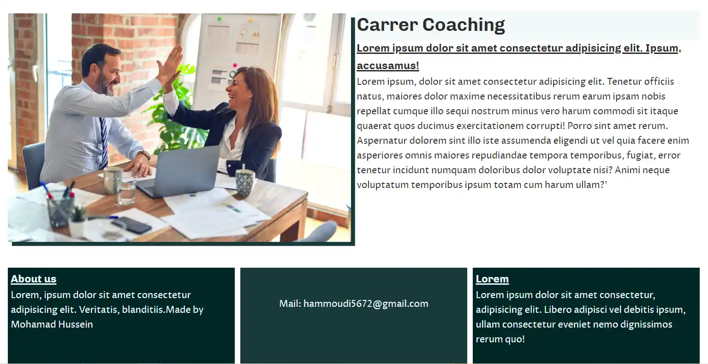

Grundlæggende web
Studiestartsprøve
Responsivt Webdesign
I dette projekt havde jeg fokus på Responsivt webdesign, som vi lærte om i tema 2. Responsiv Webdesign handler om tilpasning af hjemmeside på forskellige skærmstørrelser. For at lave et rensponsivt webdesign, anvendte jeg Media queries ved hjælp af Html og css på Visual Studio Code. Media queri er en kode der kan begrænse din webdesign inden for en bestem skærm størrelse. Media Queris hjalp mig med at danne en god og brugervenlig design til de forskellige skærmstørrelser.
Studiestartprøve02.02.01 Emnesite
I Denne opgave skulle vi lave en website om en valgfri emne
Design principper
Design principper er grundlæggende regler man kan følge når man designer en website. I denne opgave havde jeg fokus på Gestalt love. Gestalt love er nogle love der fortæller hvordan mennesket gruppere forskellige elementer og forenkler dem for opfatte objekterne som de ser. Jeg benyttede mig af gestalt love for at organisere indholdet på websiten og gør den brugervenligt. i hjemmesiden er der blevet brugt flere gestaltlove, der er blandt andet brugt gestaltloven om nærhed, lighed og lukkethed. det gjorde jef for ikke at forvirre modtageren og sørge for en god digital kommunikation.
Emnesite  >